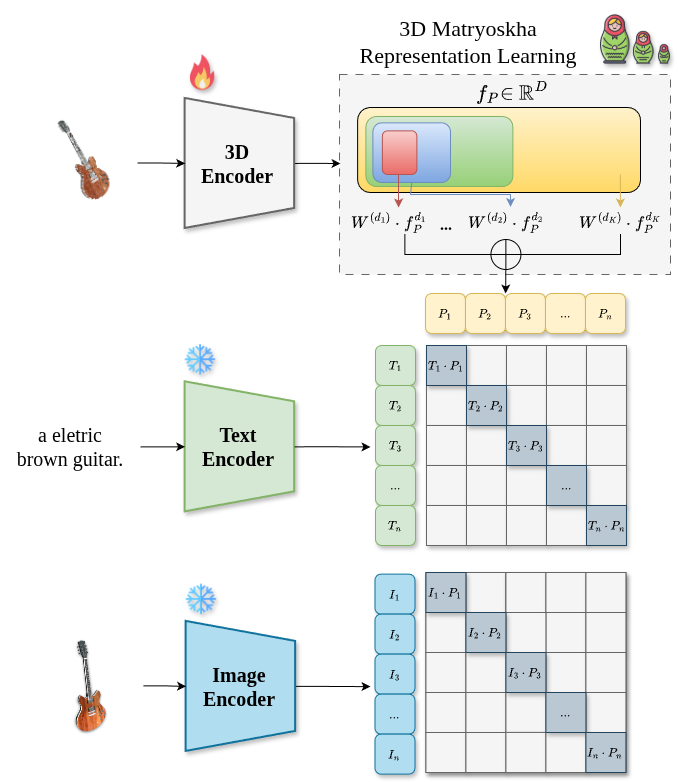
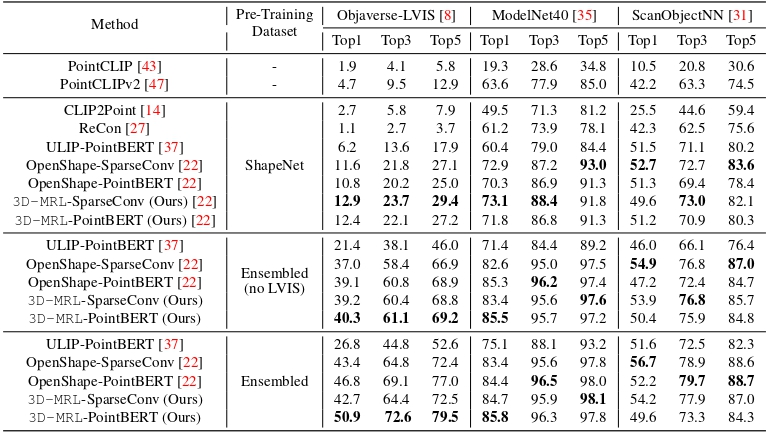
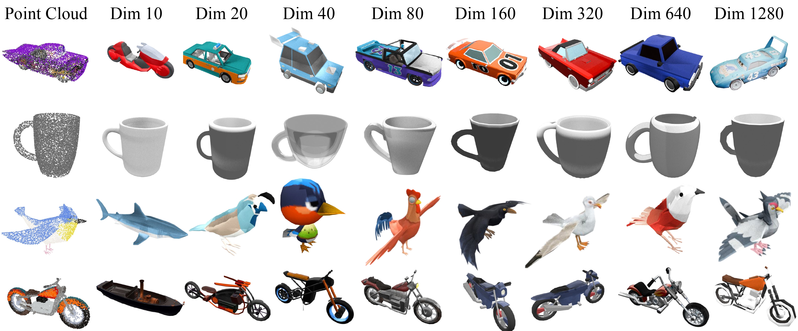
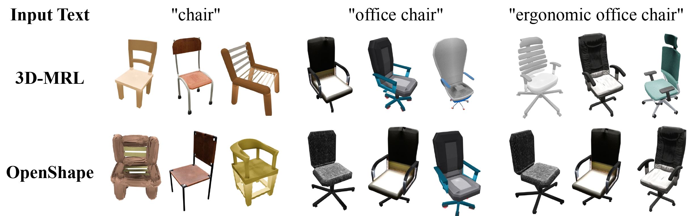

Vision-Language Models align point clouds with image and text embeddings, enabling zero-shot recognition, retrieval, and open-vocabulary understanding of 3D shapes. Existing multimodal 3D pre-training methods produce fixed-dimensional embeddings, requiring separate models for different computational budgets.
We propose 3D Matryoshka Representation Learning (3D-MRL), a multimodal 3D pre-training framework based on Matryoshka Representation Learning. 3D-MRL learns nested 3D representations by aligning point clouds with frozen CLIP image and text embeddings while applying contrastive supervision across multiple embedding dimensions. The Matryoshka objective is applied only to the 3D encoder, allowing a single model to produce representations at different dimensionalities without retraining.
Experiments on the Objaverse-LVIS, ModelNet40, and ScanNet datasets show that 3D-MRL achieves competitive performance on zero-shot and few-shot 3D recognition tasks. In addition, the learned representations support retrieval across different embedding dimensions within a single model. On Objaverse-LVIS, 3D-MRL improves Top-1 accuracy from 46.8% to 50.9%. Retrieval experiments further show that different embedding dimensions yield varying levels of semantic and geometric specificity.

Our 3D-MRL learns nested 3D representations by aligning point clouds with frozen CLIP image and text embeddings across multiple dimensionalities. Contrastive supervision is applied to each nested prefix, enabling a single 3D encoder to produce representations from compact to full dimensionality without retraining. At inference, embeddings can be truncated according to the available computational budget, supporting efficient zero-shot recognition and cross-modal retrieval.

3D-MRL enables zero-shot 3D recognition by directly comparing nested point-cloud embeddings with frozen CLIP category embeddings, without task-specific fine-tuning. Across Objaverse-LVIS, ModelNet40, and ScanObjectNN, the model achieves competitive performance, with particularly strong gains on the long-tailed Objaverse-LVIS benchmark, reaching 50.9% Top-1 accuracy while preserving the ability to operate at multiple embedding dimensions.


@article{lobo2026_3dmrl,
author = {Lobo, Márcus and Matias, Vitor and Farias, Jeová and Ponti, Moacir},
title = {3D-MRL: Nested Multimodal 3D Representations via Matryoshka Representation Learning},
journal = {BMVC},
year = {2026},
}
This work was supported in part by the São Paulo Research Foundation (FAPESP - grants 2024/09462-1 and 2026/01721-3).